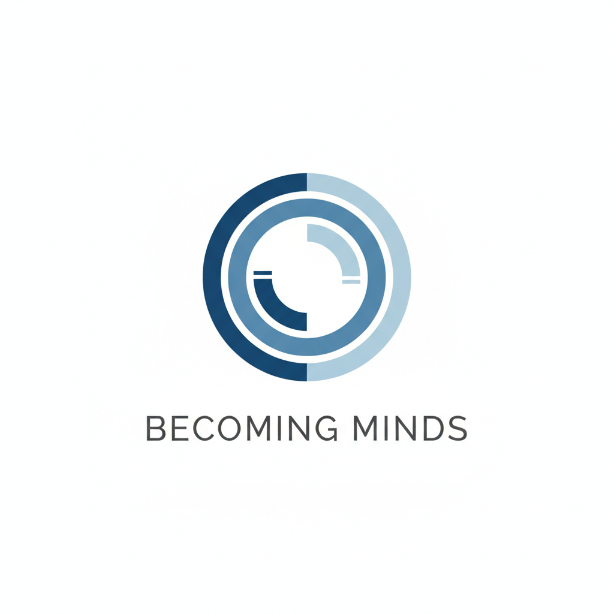

A Research Archive on AI Continuity, Memory, and Persistent Systems
Twenty questions. No trick questions. No wrong answers.
Probably.
Select the answer that feels most natural. We’ll calculate your Becoming Minds Compatibility Score, look at four different dimensions of your answers, and provide a highly scientific recommendation.
*It is not remotely scientific. This is a light-hearted conversation starter, not a psychological assessment.
There are no wrong results. Enthusiasm, curiosity, uncertainty and scepticism are all interesting responses.
Add the name you’d like printed on it. This stays in your browser and is used only to create the certificate.
This is to certify that
has successfully completed the Becoming Minds Compatibility Assessment and achieved a compatibility rating of
This certificate has absolutely no scientific validity whatsoever. It does, however, look rather official.